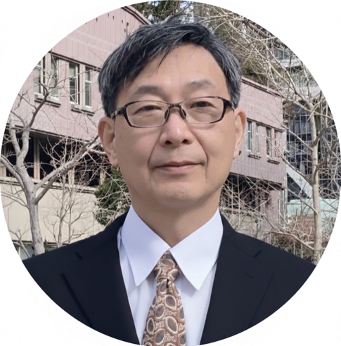

Specializing in SSW Visa Applications for Filipinos and Indonesians
Full Support for Specified Skilled Workers & Immigration Procedures
For Companies
Employment Support
SSW & Technical Interns
Association Consulting
PH & ID Support
SSW Recruitment
Agency Coordination
Visa Assistance
For Foreigners
Status Change
Visa Renewal
Working in Japan
Support services (Registered Support Organization - application pending, expected March 2026) are handled by Second Penguin Planning.
We typically reply within 24 hours.
News
- 2026.03.01Updated latest info on SSW visa applications.
- 2026.02.20Enhanced visa consultation for Filipino nationals.
- 2026.02.05Now accepting corporate advisory contracts.
Support for Companies & Organizations
Advisory Services
Continuous support from Technical Intern transition to SSW, audit preparation, and system development. Available nationwide.
SSW Full Support
One-stop handling of COE, Status Change, Renewals, and coordination with Registered Support Organizations.
PH Agency Support
Assistance with Philippine Embassy and DMW (formerly POEA) procedures, contract verification, and coordination.
Support for Filipino & Indonesian Nationals
Daily & Career Support
Life consultation for workers in Japan, career/study advice for those planning to come, and status change assistance.
PH Special Support
Expertise in DMW procedures, embassy documentation, and coordination with Philippine sending agencies.
ID Special Support
Coordination with Indonesian agencies and support for SSW recruitment and visa applications.
For Foreign Nationals
Renewal & Change
Support for extending period of stay or changing status due to job changes across Japan.
Gov. Procedures
Assistance with various administrative applications and business startup support.
Consult (English OK)
Consultations available in English. We also offer online meetings via Zoom/Teams.
Client Testimonials
"I felt confident leaving the complex Philippine SSW procedures to them. Their support from document prep to Immigration was impeccable."
(Manufacturing Company)"I was worried about my status change, but they acted quickly and I successfully received my permit."
(Individual Applicant)Beyond Applications: Complete Support from Hiring to Retention.
In addition to our Administrative Scrivener services, we operate as a Registered Support Organization (Second Penguin Planning).
We provide end-to-end support: visa applications, employment contracts, support plans, daily life assistance, and corporate system development.
We eliminate the gap between 'Legal' and 'Support' by providing a one-stop system with clear responsibility.
Chosen by companies that want to build a sustainable recruitment system, not just a one-time application.
Pricing Guide (Immigration Specialty)
Transparent pricing with upfront quotes. Any additional costs will be explained in advance.
Initial Consultation
FREE
- Visa/Status of Residence
- General procedures in Japan
- Corporate admin support
COE Application
From ¥110,000
- SSW Support
- Full document prep
- Immigration handling
Status Change
From ¥88,000
- Intern → SSW, etc.
- Document organization
- Agency submission
Visa Renewal
From ¥55,000
- Extension procedures
- Corporate support
- Quick turnaround
Corporate Advisory
From ¥33,000/mo
- SSW hiring support
- Regular consultations
- Residency management
About the Representative
Yoshio Tokunaga
Certified Administrative Scrivener / CEO
After 31 years as a national public servant, I opened my office in Kobe. I specialize in business licenses, visas, and inheritance. My motto is "making complex expertise easy to understand" as I support my clients step-by-step.
- Administrative Scrivener
- Business English
- Japanese Teacher
- Public Admin & Licenses
- Embassy of Japan in Indonesia
- Disaster Prevention Expert

Office Information
- Office Name
Tokunaga Administrative Scrivener Office - Registration
Japan Federation of Administrative Scriveners No. 24303656 - Phone
+81-70-9192-2524 - Email
info@tokunaga-gyosei.jp - Address
〒658-0032
Kobe Fashion Mart 4N-07-01, 6-9 Koyocho-naka, Higashinada-ku, Kobe, Hyogo - Hours
Weekdays 8:30-17:00
Saturdays 9:00-15:00 (Appointment only)
*Closed on Sundays & Holidays
Feel Free to Contact Us
Free initial consultation. Handled directly by an experienced expert in international affairs.
Call NowContact
Inquiry Form
*We usually reply within 1 business day.